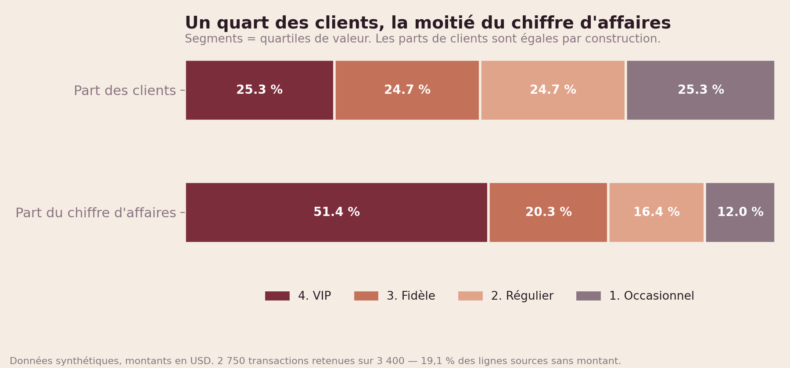
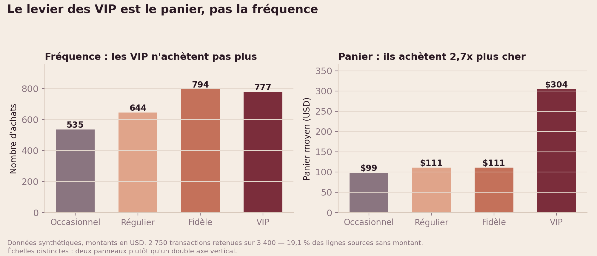
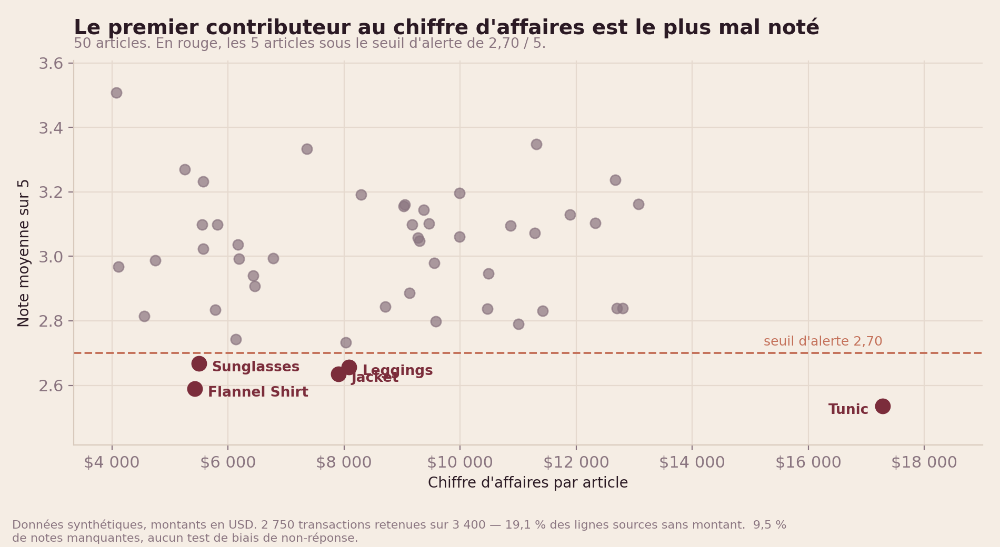
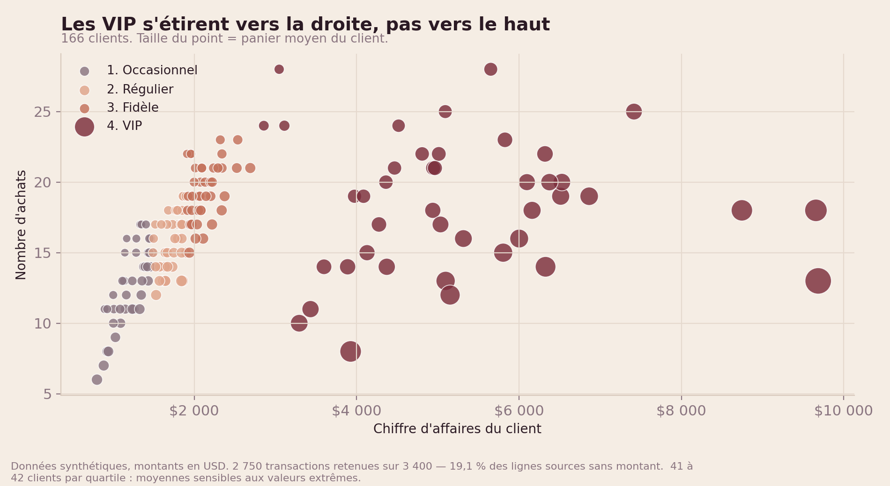
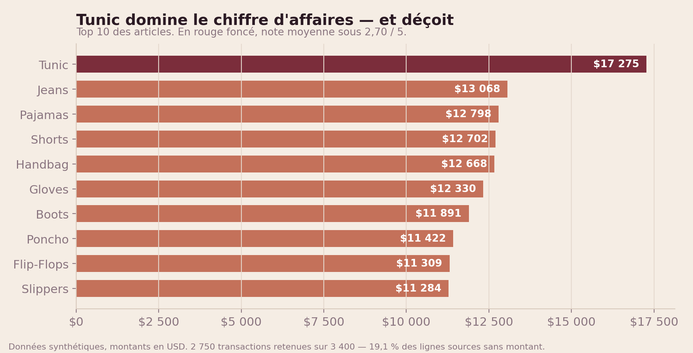

Segmentation client et qualité de données sur 2 750 transactions.
Ce projet documente aussi une erreur de modélisation trouvée dans sa propre première version.
2 750 transactions retenues sur 3 400 — 19,1 % des lignes sources sans
montant, exclues du chiffre d'affaires. Données synthétiques, montants en USD.
Période : 02/10/2022 au 01/10/2023.
Ce que disent les données
Un quart des clients, la moitié du chiffre d'affaires
Part des clients
25,3 %
24,7 %
24,7 %
25,3 %
Part du chiffre d'affaires
51,4 %
20,3 %
16,4 %
12,0 %
Les segments sont des quartiles de valeur : chacun contient environ
25 % des clients par construction. Ce qui varie, c'est leur contribution au chiffre d'affaires,
de 12,0 % à 51,4 %.
Segment
Clients
% clients
Chiffre d'affaires
% CA
Achats
Panier moyen
4. VIP
42
25,3 %
221 653 $
51,4 %
777
304,01 $
3. Fidèle
41
24,7 %
87 279 $
20,3 %
794
110,68 $
2. Régulier
41
24,7 %
70 477 $
16,4 %
644
110,72 $
1. Occasionnel
42
25,3 %
51 543 $
12,0 %
535
98,57 $
Le levier des VIP est le panier, pas la fréquence
Les VIP réalisent 777 achats contre
794 pour les Fidèles : ils n'achètent pas plus souvent.
Leur panier moyen est de 304,01 $ contre
110,68 $, soit
2.7 fois plus.
Le levier commercial est la montée en gamme, pas la relance.
Le premier contributeur au chiffre d'affaires est le plus mal noté
Article
Chiffre d'affaires
Note moyenne
Tunic
17 275 $
2,54
Flannel Shirt
5 426 $
2,59
Jacket
7 899 $
2,64
Leggings
8 087 $
2,66
Sunglasses
5 495 $
2,67
Tunic est le premier contributeur au chiffre
d'affaires (17 275 $) et l'article le plus mal noté
(2,54 / 5). Le revenu d'aujourd'hui finance l'attrition de demain :
audit qualité avant toute action d'acquisition.
Le mode de paiement discrimine peu
Panier moyen de 160,37 $ par carte
contre 152,70 $ en espèces, soit un écart de
5 %.
Faible, et sur données synthétiques : à ne pas surinterpréter.
Graphiques

Un quart des clients, la moitié du chiffre d'affaires

Le levier des VIP est le panier, pas la fréquence

Le premier contributeur au CA est le plus mal noté

Les VIP s'étirent vers la droite, pas vers le haut

Tunic domine le chiffre d'affaires — et déçoit
L'erreur de grain, et sa correction
La première version de ce tableau de bord affichait 7,6 M de chiffre d'affaires pour
2 750 transactions et un panier moyen de 156,71. Ces trois nombres sont
incompatibles : leur produit donne 430 952.
Les colonnes total_depense et nb_achats étaient des agrégats
client, laissés dans la table de transactions et donc répétés sur chaque ligne.
L'outil de restitution les additionnait, comptant chaque client autant de fois qu'il avait
d'achats — 16.6 en moyenne. Le « 2 800 clients » avait la
même origine : un décompte de lignes, pas de clients distincts. Il y a 166 clients.
La correction est structurelle : deux tables, deux grains, et un test
(assert_coherence_ca) qui échoue si les deux totaux ne se rejoignent plus.
Il tourne à chaque build.
Méthode et limites
Données synthétiques, générées à des fins pédagogiques. Aucune conclusion n'est
transposable à une enseigne réelle.
19,1 % des lignes sources sans montant, exclues du chiffre d'affaires. Si ces lignes
ne sont pas manquantes au hasard, le CA et les paniers sont biaisés d'une façon que ce jeu de
données ne permet pas de mesurer.
9,5 % de notes manquantes, sans test de biais de non-réponse. La hiérarchie des notes
est indicative, pas conclusive.
Effectif faible : 166 clients, soit 41 à 42 par quartile. Les moyennes de segment
sont sensibles aux valeurs extrêmes et aucun test de significativité n'a été mené.
Segments à effectif constant par construction. Ils ne décrivent pas une structure
client observée mais un découpage imposé.
12 mois d'historique, sans année de comparaison : aucune analyse de tendance ni de
saisonnalité n'est fiable.